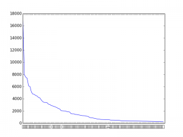

Showing Japanese characters in Matplotlib on Ubuntu
Posted on Mon 27 October 2014 in Notes
TL;DR: Install Japanese language support and insert the following in your python script
import matplotlib
matplotlib.rc('font', family='TakaoPGothic')
If you are working with any kind of NLP in Python that involves Japanese, it is paramount to be able to view summary statics in the form of graphs that in one way or another includes Japanese characters.
Below is a graph showing Zipf's Law for the distribution of characters used in [TL;DR: Install Japanese language support and insert the following in your python script
import matplotlib
matplotlib.rc('font', family='TakaoPGothic')
If you are working with any kind of NLP in Python that involves Japanese, it is paramount to be able to view summary statics in the form of graphs that in one way or another includes Japanese characters.
Below is a graph showing Zipf's Law for the distribution of characters used in](http://en.wikipedia.org/wiki/Tetsuko_Kuroyanagi) ‘Totto Channel', the sequel to her famous “Totto Chan: The little girl by the window”.

Character Distribution of 100 most used characters - but which ones?
On most systems, Matplotlib will not be able to display Japanese characters out-of-the-box and this is a big problem as the graph above is completely useless for even the most basic investigation.
I've tested on OSX, Windows 8 and Ubuntu and only OSX manages to work out of the box, despite my Windows installation being Japanese!
Most advice online will tell you to change the font used by Matplotlib, but if you are on Ubuntu it might not be completely obvious which font you need to use! Moreover there are many ways to change the font.
I've found the simplest way of changing fonts to simply be using matplotlib.rc
import matplotlib
matplotlib.rc('font', family='Monospace')
In family you can either insert the name of a font family (as in the above example) or you can name a specific font, which is what you want to do in this case. But which one? I wrote the following script to help check which fonts will work.
# -*- coding: utf-8 -*-
"""
Matplotlib font checker
Prints a figure displaying a variety of system fonts and their ability to produce Japanese text
@author: Mads Olsgaard, 2014
Released under BSD License.
"""
import matplotlib
import matplotlib.pyplot as plt
from matplotlib import font_manager
fonts = ['Droid Sans', 'Vera', 'TakaoGothic', 'TakaoPGothic', 'Liberation Sans', 'ubuntu', 'FreeSans', 'Droid Sans Japanese', 'DejaVu Sans']
#fonts = ['Arial', 'Times New Roman', 'Helvetica'] #uncomment this line on Windows and see if it helps!
english = 'The quick ...'
japanese = '日本語'
x = 0.1
y = 1
# Buils headline
plt.text(x+0.5,y, 'english')
plt.text(x+0.7, y, 'japanese')
plt.text(x,y, 'Font name')
plt.text(0,y-0.05, '-'*100)
y -=0.1
for f in fonts:
matplotlib.rc('font', family='DejaVu Sans')
plt.text(x,y, f+':')
matplotlib.rc('font', family=f)
plt.text(x+0.5,y, english)
plt.text(x+0.7, y, japanese)
y -= 0.1
print(f, font_manager.findfont(f)) # Sanity check. Prints the location of the font. If the font it not found, an error message is printed and the location of the fallback font is shown
plt.show()
On ubuntu the output should be the following:
Droid Sans /usr/share/fonts/truetype/droid/DroidSans.ttf Vera /home/supermads/anaconda3/lib/python3.4/site-packages/matplotlib/mpl-data/fonts/ttf/Vera.ttf TakaoGothic /usr/share/fonts/truetype/takao-gothic/TakaoGothic.ttf TakaoPGothic /usr/share/fonts/truetype/takao-gothic/TakaoPGothic.ttf Liberation Sans /usr/share/fonts/truetype/liberation/LiberationSans-Regular.ttf ubuntu /usr/share/fonts/truetype/ubuntu-font-family/Ubuntu-R.ttf FreeSans /usr/share/fonts/truetype/freefont/FreeSans.ttf Droid Sans Japanese /usr/share/fonts/truetype/droid/DroidSansJapanese.ttf DejaVu Sans /usr/share/fonts/truetype/dejavu/DejaVuSans.ttf
As you can see, I'm running Anaconda Python 3, and if Anaconda can't find a font it will fallback into it's own folder to load the Vera font.

Surprisingly, Droid does support Japanese, it just saves the Japanese character space in a seperate font file, rendering it useless for this purpose. However, the Takao font family does work for our purpose.
Takao fonts should be installed by default if you have set your location somewhere in Japan during installation of Ubuntu or if you have installed support for Japanese language in System Settings → Language Support (just hit the super key and search for language). I recommend this, since this will also install the Japanese input method, Anthy
You can also use apt-get, like this from the command line (not tested):
sudo apt-get install fonts-takao-mincho fonts-takao-gothic fonts-takao-pgothic
And now we can finally see which characters Kuronayagi used the most for her sequel:

And apparently, that's the Japanese comma, also called 読点